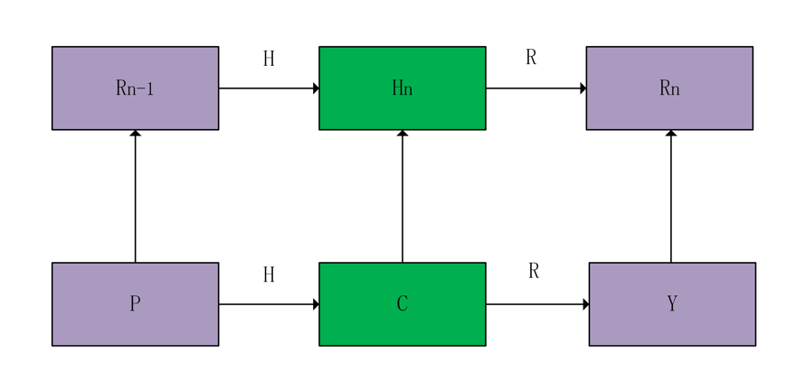
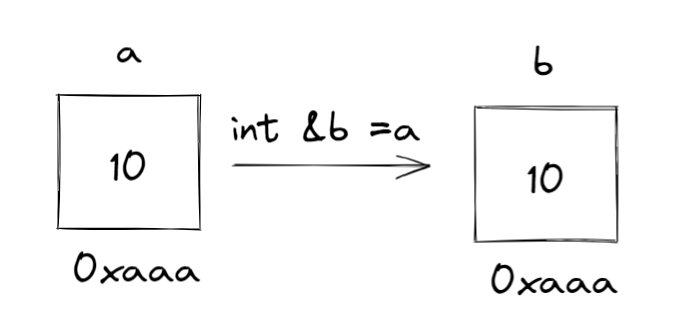
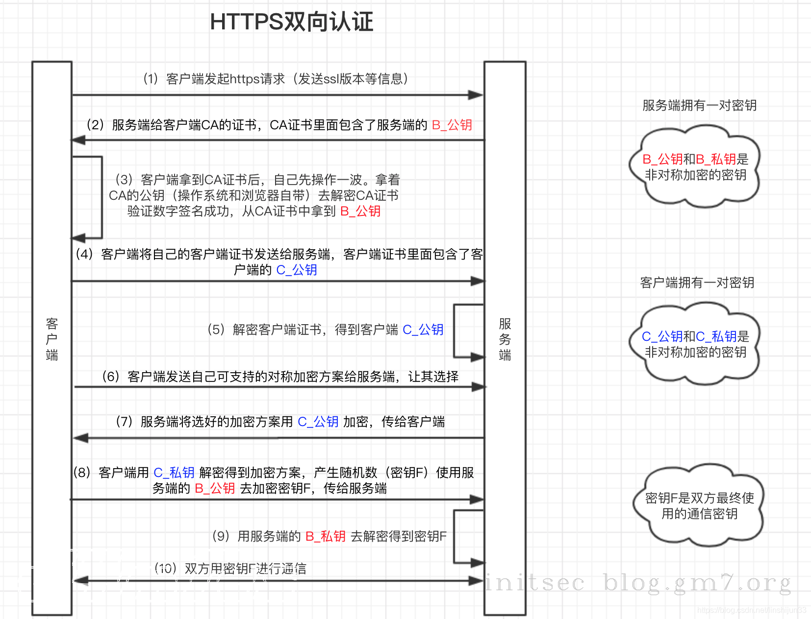

| 常见名词 | 解释 |
|---|---|
| 0day(Zero-day) | 没有补丁的安全漏洞 |
| Nday | 官方发布了补丁，但该漏洞仍然大量未修复，存在一定可利用性 |
| POC | 一段无害的用来证明漏洞存在的代码 |
| EXP（exploit） | 一段对漏洞如何利用的详细说明或者一个演示的漏洞攻击代码 |
| payload（有效载荷） | 指成功 exploit 之后，真正在目标系统执行的代码或指令 |
| CVE | Common Vulnerabilities & Exposures 公共漏洞和暴露 CVE编号--漏洞标签 |
| ShellCode | 一段16进制机器码，可在暂存器eip溢出后，塞入一段可让CPU执行的shellcode机器码，从而执行任意指令，EIP寄存器，它里面存放的值是CPU下次要执行的指令地址，因此可以通过修改EIP寄存器的值来执行shellcode |
| FUZZ | 模糊测试：随机输入，观察输 |
| CMS | 内容管理系统：指的是一种内容编辑程序。就像在博客写文章一样，不需要懂得编程的人，也可以通过CMS发布，更改，管理内容。 |
| CNVD | China National Vulnerability Database 国家信息安全漏洞共享平台 |
| Rootkit | 载入到操作系统内核中的恶意软件，具有root权限 |
| WAF | Web应用防火墙，具有针对 HTTP/HTTPS 的安全策略 |
| 堡垒机 | 监控和记录运维人员对网络内的服务器、网络设备、安全设备、数据库等设备的操作行为，以便集中报警、及时处理及审计定责。 |
| 彩虹表 | 空间换时间，通过哈希碰撞破解哈希值 |
| 供应链攻击 | 攻击软件供应商，如向更新程序中注入木马 |
| 沙箱 | 虚拟系统程序： 在隔离环境中，用以测试不受信任的文件或应用程序等行为的工具 |
| 域名泛解析 | *.a.com指向同一IP |
| OSINT | 公开来源情报（OSINT, Open Source INTelligence）是从公开来源收集到的情报 |
| IDS | Intrusion Detection System（入侵检测系统），旁路部署 |
| IPS | Intrusion Prevention System（入侵防御设备），串联部署 |
| SA | Situation Awareness（态势感知），态势感知是一种基于环境的、动态、整体地洞悉全网安全风险的能力。它以安全大数据（采集全网流量数据和安全防护设备日志信息）为基础，从全局视角对全网安全威胁进行发现识别、理解分析展示和响应处置，并预测发展趋势，为后续网络安全的相关决策与行动提供数据依据。 |
| AV | anti-virus killer（反病毒杀手），防病毒软件如WinowsDefinder，360 |
| 上/下游代理 | 请求：客户端→下游代理→上游代理→服务端 响应：服务端→上游代理→下游代理→客户端 |
| RASP | 运行时应用程序自我保护（Runtime application self-protection，简称RASP）RASP采用基于攻击行为分析的主动防御机制，严防文件读写、数据访问、命令执行等Web应用系统命脉（在Web应用程序执行关键的Java API之前插入防御逻辑（API HOOK），从而控制原类方法执行的业务逻辑） |
| 路由器 | 路由器（Router）是一种网络设备，用于将数据包从一个网络转发到另一个网络。主要功能根据网络协议决定最佳的路径来转发数据，网络地址转换（NAT） |
| 交换机 | 交换机是一种网络设备，用于在局域网中传输数据包。它有多个端口，可以连接多台计算机或其他网络设备，如打印机、服务器等。交换机能够根据每个数据包的目标地址，将其转发到对应的目标设备，实现设备之间的通信和数据传输。交换机还可以提供一些额外的功能，如虚拟局域网（VLAN）划分、安全策略配置等。 |
MVC设计思想

ORM--对象关系映射

蠕虫、病毒之间的区别

正向/反向代理
https://www.cloudflare.com/zh-cn/learning/cdn/glossary/reverse-proxy/
正向代理
转发代理，通常称为代理、代理服务器或 Web 代理，是位于一组客户端计算机之前的服务器,确保没有源站直接与该特定客户端通信

在标准的互联网通信中，计算机 A 将直接与计算机 C 保持联系，客户端将请求发送到源服务器，并且源服务器将响应客户端。当存在正向/转发代理时，A 将请求发送到 B，B 随后将请求转发给 C。C 将向 B 发送响应，而 B 则将响应转发给 A。
反向代理
反向代理是位于一个或多个 Web 服务器前面的服务器，拦截来自客户端的请求，确保没有客户端直接与该源站通信。

通常，来自 D 的所有请求都将直接发送到 F，而 F 会直接将响应发送到 D。使用反向代理，来自 D 的所有请求都将直接发送给 E，而 E 会将其请求发送到 F 并从 F 接收响应，然后将适当响应传递给 D。
| 对象 | 优点 | |
|---|---|---|
| 正向/转发代理 | 客户端 | 匿名，绕过访问限制 |
| 反向代理 | 服务端 | 更加安全，提高服务器性能 |
静态web和动态web
https://help.dedecms.com/shiyongshouce/moshi/mingci.html
伪静态即是网站本身是动态网页如.php、.asp、.aspx等格式动态网页有时这类动态网页还跟"?"加参数来读取数据库内不同资料，伪静态就是做url重写操作(即rewrite)。
demo
跳转需求：
访问http://www.kevin.com/p/123456.html 跳转成 http://a.aa.com/p/123456
配置如下:
rewrite ^/p/(\d+).html http://www.kevin.com/p/$1 last;
解释说明：
\d是数字的意思 +是最少一个{1,} 1到无穷大{1,3} 这样是1-3位数。
DDOS攻击和CC攻击
DDoS攻击打的是网站的服务器，而CC攻击是针对网站的页面攻击的。
用术语来说就是，一个是WEB网络层拒绝服务攻击（DDoS），一个是WEB应用层拒绝服务攻击（CC）。
网络层就是利用肉鸡的流量去攻击目标网站的服务器，针对比较本源的东西去攻击（通信信道），服务器瘫痪了，那么运行在服务器上的网站肯定也不能正常访问了。
而应用层就是我们用户看得到的东西，就比如说网页，CC攻击就是针对网页来攻击的，CC攻击本身是正常请求，网站动态页面的正常请求也会和数据库进行交互的，当这种"正常请求"达到一种程度的时候，服务器就会响应不过来，从而崩溃。
彩虹表
https://zhuanlan.zhihu.com/p/105578739
彩虹表(rainbow table)是一个用于加密散列函数逆运算的预先计算好的表，常用于破解加密过的密码散列。如MD5，SHA1.
事先准备大量哈希链表：
X：随机生成的明文
H：哈希函数
R：自定义函数

只保存开头和末尾位置即X和Rn。
对于经过H得到的密文C进行破解：首先使用R得到Y=R（C），再将Y与Rn进行比较。
①如果相等，则说明密文C对应的明文P在哈希链表中的Rn-1处。原理见下图。

②如果不相等，则说明密文C对应的明文P不在哈希链表中的Rn-1处。所以需要向前查找是否在Rn-2~R1处。
具体流程：对Y再用H和R函数，得到Y‘，与Rn比较，如果相等，则说明明文为Rn-2，如果不是，就重复步骤，直到所有哈希链表都查找过，说明破解失败。
防御手段：加密时使用盐值
堆和栈
栈区保存声明的变量例如
int a=1,由系统自动分配堆区保存用户申请的变量例如
malloc，b=&a程序在编译变量和对函数分配内存都在栈上进行，且函数调用时参数的传递也是在栈上进行。
按值传递，按引用传递和按指针传递
https://www.junmajinlong.com/coding/pass_by_value_or_ref/
按值传递
开辟新空间，将数据对象拷贝一份副本到新空间中
int a=10; int b=a;
这时候修改a或b的值，都不会影响另一个变量的值
按引用传递
int a=10; int &b=a;不开辟新空间，只是给数据对象所在空间名起了一个别名

这时候修改a或b的值，应该会影响另一个变量的值，因为二者的地址是一样的。
按指针传递
在c或c++可以操作指针的语言中
int a=10; int* b=&a;在堆内存中开辟空间用来保存指针b，b指向a所在的地址（保存a的地址）。

阻塞和非阻塞，同步和异步，回调函数
例子
我要看足球比赛，但是妈妈叫我烧水，电视机在客厅，烧水要在厨房。家里有2个水壶，一个是普通的水壶，另一个是水开了会叫的那种水壶。我可以：
- 用普通的水壶烧，人在边上看着，水开了再去看球。（同步，阻塞）这个是常规做法，但是我看球不爽了。
- 用普通水壶烧，人去看球，隔几分钟去厨房看看。（同步，非阻塞）这个又大问题，万一在我离开的几分钟水开了，我就麻烦了。
- 用会叫的水壶，人在边上看着。（异步，阻塞）这个没有问题，但是我太傻了。
- 用会叫的水壶，人去看球，听见水壶叫了再去看。（异步，非阻塞）这个应该是最好的。
等着看球的我：阻塞
看着电视的我：非阻塞
普通水壶：同步
会叫的水壶：异步
所以，异步往往配合非阻塞，才能发挥出威力。
回调函数
在上面的例子中，用会叫的水壶，人去看球，听见水壶叫了再去看。（异步，非阻塞）这一方法的实现就是使用了回调函数。
MVC架构

小端序和大端序

HTTPS单向认证

HTTPS双向认证

CGI与fastCGI
X64、X86和X86_64
X64、X86和X86_64都是x86指令集架构
X86是x86指令集架构的32位版本。
"x86"这个术语源自Intel 8086处理器，它是x86家族的第一款处理器。
X64和X86_64都是x86指令集架构的64位扩展（X86_64将x86架构的兼容性与x64架构的增强功能结合起来）
DAST、SAST、IAST
一文洞悉DAST、SAST、IAST ——Web应用安全测试技术对比浅谈 - 安全牛 (aqniu.com)
什么是开发环境、测试环境、UAT环境、仿真环境、生产环境？
- dev环境：开发环境，外部用户无法访问，开发人员使用，一般来讲，开发环境中的服务器配置比较随意主要是用来测试的，无用户交互，并且要打开错误报告，方便程序员调试。
- test环境：测试环境，外部用户无法访问，专门给测试人员使用的，版本相对稳定。
- pre环境：性能评估测试（压测）环境，外部用户可以访问，但是服务器配置相对低，其它和生产一样。
- uat环境：验收测试环境，主要作为客户体验的环境。
- pro环境：生产环境，面向外部用户的环境，连接上互联网即可访问的正式环境。